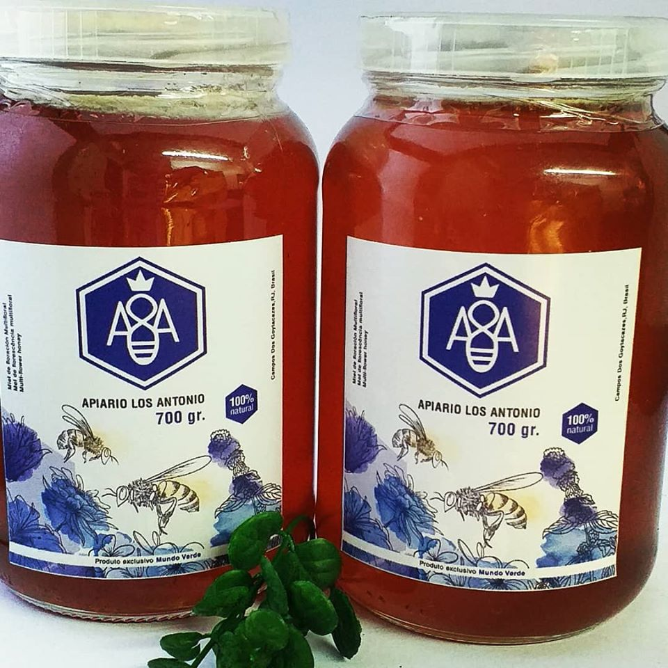

O mel é um produto natural obtido a partir do néctar das flores e de excreções da abelha. Além de ser um ótimo adoçante natural, este alimento é cheio de benefícios porque conta com ação antimicrobiana, capaz de impedir o crescimento ou destruir micro-organismos e assim proteger contra doenças.
